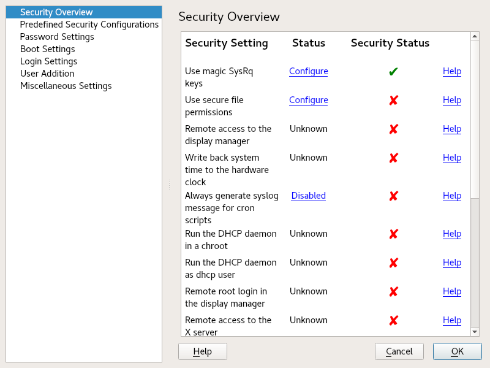

Chapter 17. Configuring security settings with YaST
17.1.
The displays a comprehensive list of the most important security settings for your system. The security status of each entry in the list is visible. A green check mark indicates a secure setting while a red cross indicates an entry as being insecure. Click to open an overview of the setting and information on how to make it secure. To change a setting, click the corresponding link in the Status column. Depending on the setting, the following entries are available:
- /
-
Click this entry to toggle the status of the setting to either enabled or disabled.
-
Click this entry to launch another YaST module for configuration. You are returned to the Security Overview when leaving the module.
-
A setting's status is set to unknown when the associated service is not installed. Such a setting does not represent a potential security risk.
